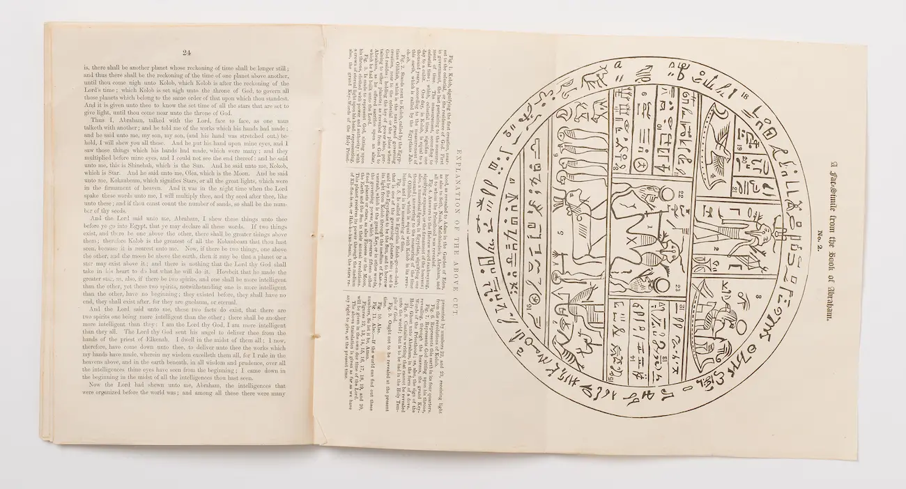

Old & New Testament
The Holy Bible
Containing the word of God as revealed through ancient prophets and the life and ministry of Jesus Christ.
 Scripture Explorer
Scripture Explorer
Welcome to
Discover and study key verses from the four standard works of The Church of Jesus Christ of Latter-day Saints.
The Four Standard Works
The standard works are the official scriptural canon of The Church of Jesus Christ of Latter-day Saints, containing the word of God as revealed through ancient and modern prophets.
Old & New Testament
Containing the word of God as revealed through ancient prophets and the life and ministry of Jesus Christ.
Another Testament of Christ
Written by ancient prophets on the American continent and translated by Joseph Smith through the gift and power of God.
Modern Revelation
Revelations given to Joseph Smith and other latter-day prophets, containing doctrines and covenants of the restored gospel.

Selections & Translations
A collection including the Book of Moses, the Book of Abraham, and Joseph Smith's own history and Articles of Faith.
Daily Scripture Study
Regular scripture study deepens understanding of the gospel, invites the Spirit, and builds a lasting personal testimony of Jesus Christ.
Each verse studied builds understanding and testimony of the Savior and his gospel.
The Holy Ghost uses scripture to prompt and guide us through personal challenges and decisions.
The words of prophets bring comfort and peace, especially in times of trial and uncertainty.